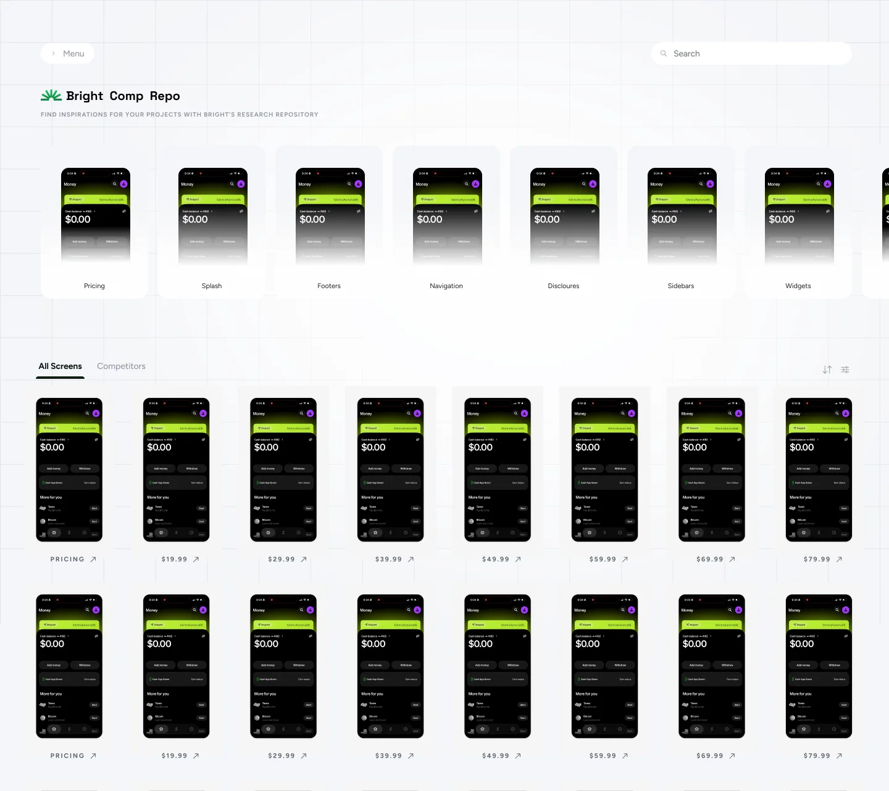
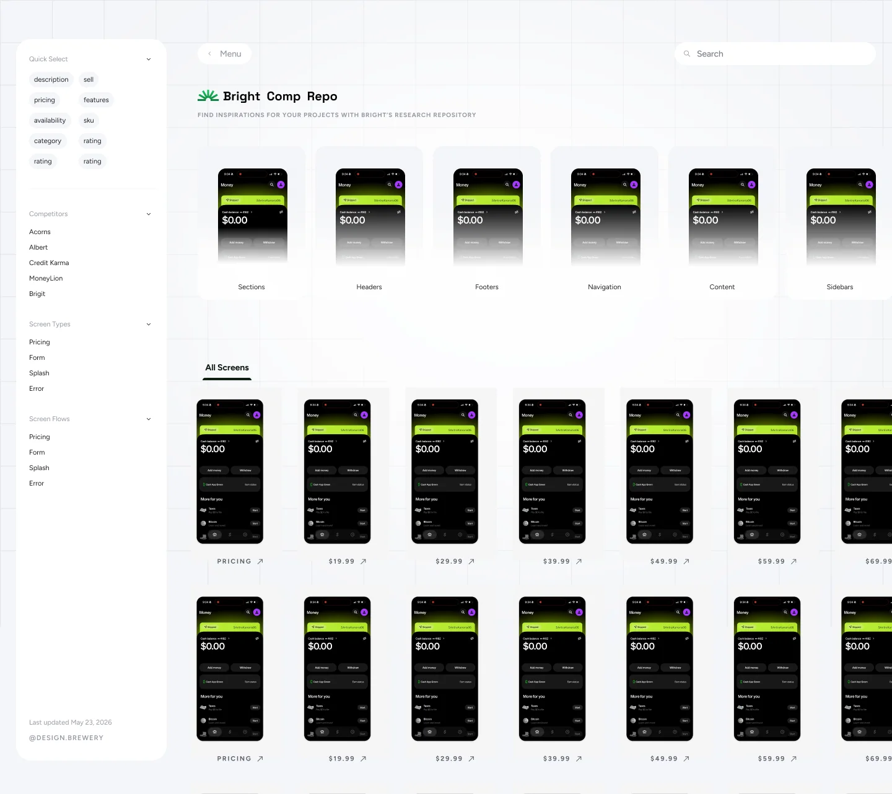
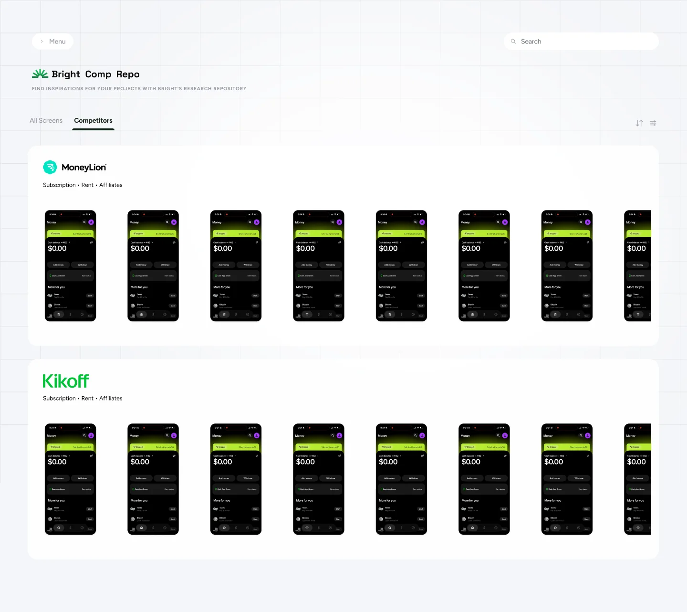
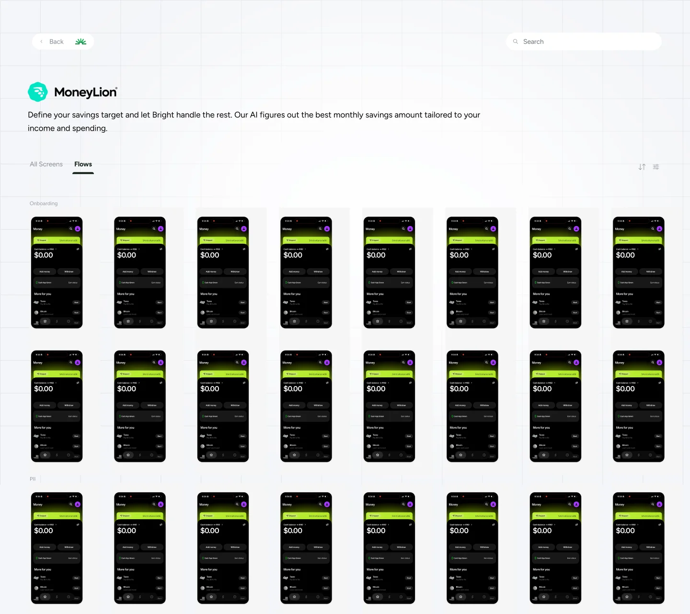

Atlas
To solve the problem of research being more accessible, I was able to ship a complete independent software with the help of knowledge of design and AI.
Overview
A designer built the tool that made research searchable.
Problem
Competitor research sat in Figma boards with no search. A PM asking how an app handles payroll got a Slack message and a wait.
My part
I defined the product, designed it, and built the AI tagging pipeline, the web app and the deployment, end to end.
Result
A reference now takes about two minutes instead of about an hour. 12 of the 17 priority users adopted it.
Problem
Our competitor research was trapped inside Figma.
The apps we compete with are fintech products that need accounts, onboarding and real bank connections before the interesting screens appear, so they are not on Mobbin or AppShots. Researchers had captured hundreds of flows and pasted them into Figma boards with no search.
A PM asking "how does this app handle payroll?" got a Slack message and a wait. We had the research. We had no way to surface it.
Goal
One private, searchable product for three kinds of questions.
Designer user flows, one journey per row.
PM user flows, one journey per row.
Exec user flows, one journey per row.
- One journey mapped per person, not per feature.
- Every path ends in the same place: a screen they can use.
Options
Three ways to get there, and why two lost.
Approach
Two weeks of thinking came before any building.
I spent the first two weeks working out whether this was possible. The answer was to teach Claude to look at each screenshot and mark it: which flow, which feature, what copy, which partner. Every image goes through that pipeline and comes out as structured data.
- Raw screenshotsHundreds of captured flows
- Claude tags each imageIt looks at every screenshot and marks it
- Flow, feature, copy, partnerThe four marks on every image
- Structured datasetEvery image comes out as data
- SearchableBy flow, feature, screen type, copy and pricing
You cannot search pixels. So the first two weeks went on how to make thousands of screenshots searchable.
Design
Search first, filters second, results grouped per competitor.
The structure is shallow. A visitor lands, explores, browses or searches, reaches screens, and opens a company.
Information architecture. I considered a landing page with an Explore call to action.

Home: screen-type categories above a dense grid of all screens.

Filters: quick select, competitors, screen types and screen flows.

Competitors tab: grouped per competitor, so a flow reads in sequence.

A competitor's page, with a Flows tab beside All screens.
Build
Private storage, a database, and one app in front.
The infrastructure was straightforward: images in private storage, metadata in a database, and a web app in a private network that queries the data and serves the images.
- S3: imagesEvery competitor screenshot in a private, VPN-gated bucket.
- RDS: metadataFlow tags, feature labels, extracted copy, ratings, bureau mentions.
- EC2: the appA Next.js front and back end inside a private VPC.
- SearchQuery the metadata, get the images, side by side across apps.
Private bucket, private network, VPN required. Images never leave.
What shipped
A private product first, then three releases.
V1 went live after four weeks. Three releases followed:
- More apps.
- An AI inspiration tab.
- Atlas made queryable from an AI coding assistant through an internal plugin.
It now covers 40 competitors and is updated weekly.
App detail: every screen grouped by flow, filtered to one journey.
Search: asking how a competitor onboards.
AI Inspiration tab.
A setback
The site went down three weeks after launch.
The lesson: any credential in a shared file is a dependency.
Impact
A reference went from an hour to two minutes.
Finding a reference went from about an hour to about two minutes, measured as average time to complete the task. 12 of the 17 priority users (about 71%) adopted it.
Research that was trapped in boards became searchable by flow, feature, screen type, copy and pricing.
Takeaways
What I would do differently.
- Use environment variables from day one.
- Invest in the tagging model before ingesting at scale. Search quality is tagging quality.
- Keep the two-week think, two-week build split for anything this undefined.